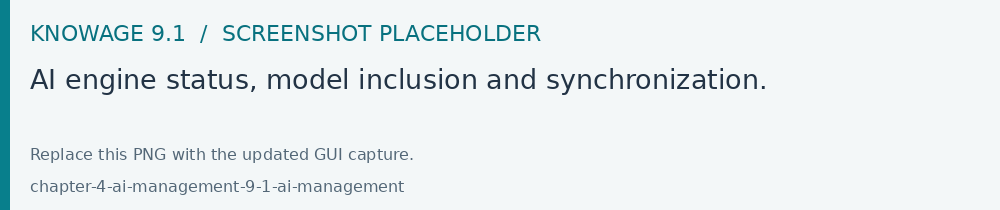

AI management
Open AI Management from the authorized modules when the AI integration is
enabled in Enterprise Edition. The integration requires a configured
KNOWAGE.AI.URL and the EngGPTIntegration functionality on the role.
The engine overview shows the configured service, reachability and
synchronization state.
Check the engine overview and resolve connection errors before synchronizing.
Review the business-model list and choose which models to include for AI use.
Synchronize the included business models and the knowledge base using the corresponding actions, then check the reported status.
Select a business model to maintain its gold queries, where supported by the configured service. Save the changes before leaving that model.
Test the AI assistant with a representative reader account.
Gold queries are curated examples associated with a business model. Keep their questions, queries and expected business meaning aligned with that model’s schema. Recheck synchronization after changing model metadata or the available source structure.

Fig. 709 AI engine status, model inclusion and synchronization.
The external AI service, model configuration and connectivity are deployment prerequisites. Configure them through the distribution’s supported integration settings; the management page reports the state of that integration.